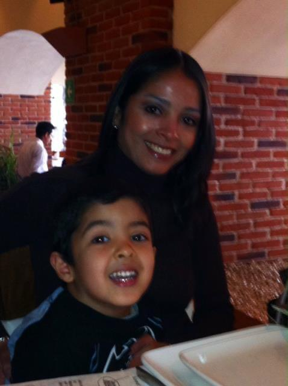

Dulce Franco
Una gran madre
¿Quién es Dulce?
Dulce Franco es una mujer de 50 años que nació el 3 de enero de 1975. Es una persona muy trabajadora y resiliente, que afronta todos los retos de su vida con mucho coraje y fe. Siempre se preocupa por su hijo, y trabaja muy duro para poder darle lo mejor. Trata a todo el mundo con mucho respeto, y siempre tiene una sonrisa, sin importar lo que esté pasando. Es una persona muy alegre, siempre puedes contar con ella para que sea un apoyo en cualquier situación.

Un dia en su vida
En un dia normal, le prepara la lonchera a su hijo por la mañana, luego se arregla para pasar el dia trabajando, que a veces involucra pasar tiempo fuera de casa. A pesar de todo, siempre encuentra momentos para pasar tiempo con su hijo.
Agradecimiento
Mamá, gracias por ser la persona mas importante para mi, y por amarme y apoyarme siempre. Si no fuera por ti, yo no tendría nada.
